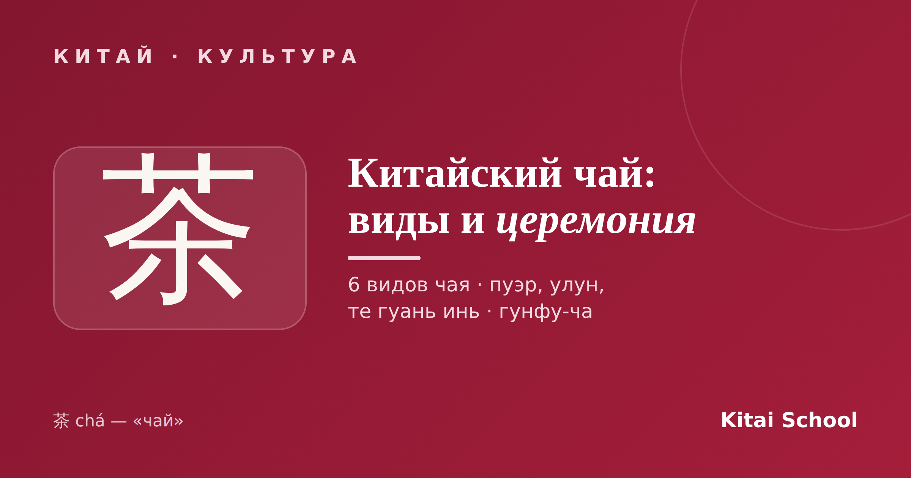
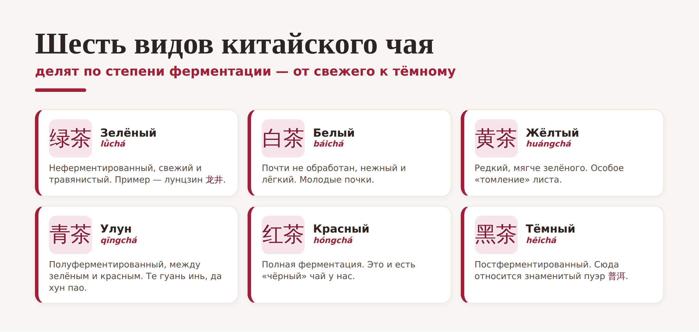
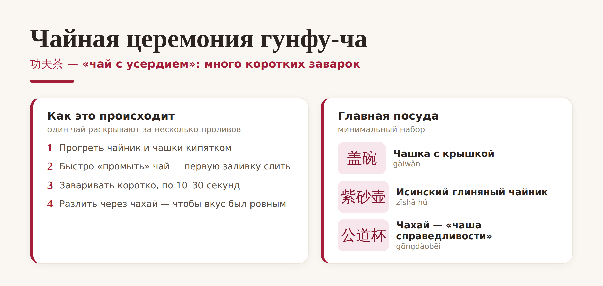

Китай · культура

Для китайцев чай — это не «пакетик в кружке», а целая культура длиной в тысячи лет. Само слово 茶 (chá) подарило нам русское «чай». Разберёмся, какие бывают виды китайского чая, чем пуэр отличается от улуна и что происходит на настоящей чайной церемонии.
Главное, что нужно понять про виды китайского чая: их делят не по месту, а по степени ферментации — от совсем свежего зелёного до тёмного выдержанного. Всего видов шесть:

Пара важных уточнений. То, что мы называем «чёрным чаем», в Китае зовут красным (红茶) — по цвету настоя. А знаменитый пуэр (普洱) — это отдельный, тёмный постферментированный чай из провинции Юньнань, который может выдерживаться годами, как вино.
Эти три названия чаще всего путают, а всё просто. Улун (乌龙) — не сорт, а целый вид: полуферментированный чай где-то между зелёным и красным, с богатым цветочным вкусом. Те гуань инь (铁观音, «Железная Гуаньинь») — это как раз самый знаменитый улун родом из уезда Аньси. А пуэр — из другой «весовой категории», тёмный чай со своим землистым характером.
Так что если улун и те гуань инь — близкие родственники, то пуэр стоит особняком. Из других легенд стоит знать зелёный лунцзин (龙井) и «скальный» улун да хун пао (大红袍) — один из самых дорогих чаёв в мире.
Настоящая китайская чайная церемония называется 功夫茶 (gōngfu chá) — «чай, приготовленный с усердием». Её смысл не в пышном ритуале, а в том, чтобы раскрыть один и тот же чай через много коротких заварок — и каждая будет чуть другой на вкус.

Заваривают чай в маленькой 盖碗 (гайвань, чашке с крышкой) или в исинском глиняном чайнике 紫砂壶, а разливают через 公道杯 — «чашу справедливости», чтобы всем достался одинаково крепкий настой. Первую быструю заливку обычно сливают — «будят» и промывают лист. А дальше — короткие проливы по 10–30 секунд, и один хороший чай выдерживает их с десяток.
Попробуйте дома. Чтобы почувствовать разницу, не нужен дорогой набор. Возьмите улун или пуэр, залейте кипятком совсем ненадолго и слейте в отдельную чашку — а потом заваривайте тот же чай ещё и ещё. Вы удивитесь, как меняется вкус от пролива к проливу.
Вот и весь мир китайского чая: шесть видов по ферментации, пуэр и улун как два разных характера и церемония, в которой важна не пышность, а внимание к вкусу. Заварите чай не спеша — и вы поймёте, почему в Китае это отдельное искусство.
Приятного чаепития! 品茶。